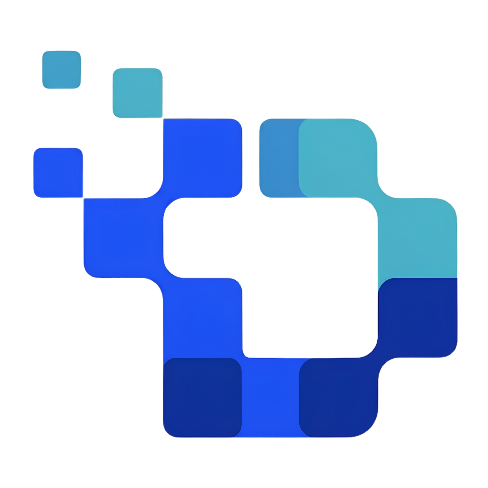

Belajar dari dasar
Tidak perlu pengalaman digital marketing. Asesmen awal membantu memetakan kemampuan, minat karier, dan kebutuhan belajar.
01 / FUNDAMENTAL
DigitalNestDIGITAL MARKETING CAREER PROGRAM
Pelatihan Digital Marketing berbasis praktik untuk lulusan SMP/SMA/MA, fresh graduate, dan alumni pesantren yang ingin melangkah ke dunia kerja digital.
Program dirancang demand-driven dengan modul ringkas, sesi praktisi, tugas praktik, dan konsultasi mentor. Materi dapat diakses fleksibel melalui smartphone.
Tidak perlu pengalaman digital marketing. Asesmen awal membantu memetakan kemampuan, minat karier, dan kebutuhan belajar.
01 / FUNDAMENTALKerjakan riset pasar, konten, kampanye iklan, dan proyek akhir yang bisa ditunjukkan kepada calon pemberi kerja.
02 / PRACTICE-BASEDSiapkan CV ATS, portofolio digital, simulasi wawancara, serta sesi job matching dengan jaringan mitra.
03 / CAREER READYKurikulum menggabungkan dasar digital marketing, produksi konten, iklan berbayar, analitik, dan proyek berbasis studi kasus atau mitra.
Simulasi ruang belajar untuk memperlihatkan materi, tugas, progres, dan toolkit peserta. Ini bukan akun belajar aktif.
Pelajari Attention, Interest, Desire, dan Action untuk menyusun pesan promosi.
Tentukan audiens, tulis hook, lalu buat CTA sesuai brief produk.
○ Belum dikerjakanBelajar bukan hanya menonton.Setiap modul mengarahkanmu membuat karya, menerima masukan, dan memperbaiki hasilnya.
Rangkaian pembelajaran, evaluasi kompetensi, persiapan karier, dan dukungan pascalulus dalam satu perjalanan.
Pemetaan kemampuan dasar, minat karier, dan kebutuhan persiapan.
12 minggu kelas online, sesi praktisi, tugas, dan konsultasi mentor.
Dua mini-project, satu capstone project, dan uji kompetensi.
CV ATS, portofolio, simulasi interview, dan sesi pencocokan peluang.
Kembangkan keterampilan untuk berkarier, magang, atau menawarkan jasa secara mandiri.
Social Media SpecialistMerancang dan mengelola konten media sosial
↗Content CreatorMengembangkan konten teks, desain, dan video
↗Digital Ads Specialist (Junior)Mendukung kampanye iklan dan evaluasi performa
↗Digital Marketing ExecutiveMendukung strategi pemasaran digital
↗Freelancer / Admin MarketingMengelola jasa atau mendukung marketplace
↗Estimasi belajar sekitar 10 jam per minggu. Rancangan program mencantumkan pilihan pembayaran mandiri, cicilan bertahap, atau Income Share Agreement (ISA).
✓ Materi bite-sized dan hemat kuota
✓ Sesi live praktisi setiap minggu
✓ Tugas praktik dan konsultasi mentor
✓ Opsi pembiayaan fleksibel*
*Ketersediaan biaya, sertifikasi, dan skema pembiayaan perlu dikonfirmasi penyelenggara.Harga mengikuti draft silabus dan masih merupakan simulasi validasi minat, bukan transaksi atau pendaftaran resmi.
Rp1.490.000
Belajar terstruktur dan mulai membangun portofolio.Rp2.490.000
Lebih banyak masukan personal untuk progresmu.Rp3.490.000
Pendampingan personal yang lebih intensif.Kenali program Digital Marketing DigitalNest dan rencanakan perjalanan belajarmu.
Informasi awal mengenai rancangan program.
Tidak harus. Program dimulai dengan asesmen kemampuan. Peserta yang membutuhkan penguatan literasi digital dapat mengikuti kelas bridging sesuai hasil asesmen.
Rancangan program berlangsung 12 minggu atau sekitar 3 bulan, dengan estimasi total 120 jam atau sekitar 10 jam per minggu.
Peserta berlatih membuat riset pasar, materi promosi, kalender konten, laporan kampanye organik, simulasi kampanye berbayar, dan capstone project.
Mitra LSP/TUK, ketentuan sertifikasi, dan mekanisme penempatan perlu dikonfirmasi. Prototype ini tidak menjanjikan sertifikat atau pekerjaan secara otomatis.
Bukan. Tombol Daftar Minat hanya simulasi untuk mengukur ketertarikan. Data tidak dikirim atau disimpan ke server.